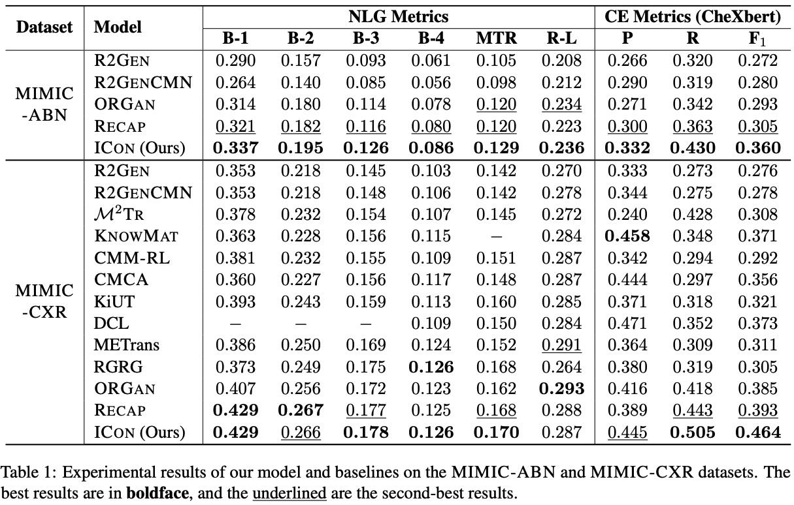
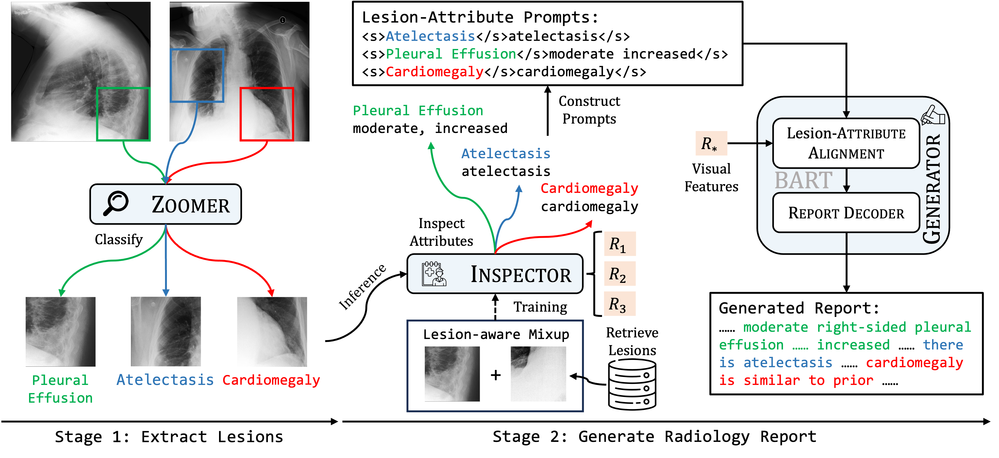

Experimental Results
Quantitative Results
Qualitative Results

Previous research on radiology report generation has made significant progress in terms of increasing the clinical accuracy of generated reports. In this paper, we emphasize another crucial quality that it should possess, i.e., \textit{inter-report consistency}, which refers to the capability of generating consistent reports for semantically equivalent radiographs. This quality is even of greater significance than the overall report accuracy in terms of ensuring the system's credibility, as a system prone to providing conflicting results would severely erode users' trust. Regrettably, existing approaches struggle to maintain inter-report consistency, exhibiting biases towards common patterns and susceptibility to lesion variants. To address this issue, we propose ICon, which improves the inter-report consistency of radiology report generation. Aiming at enhancing the system's ability to capture the similarities in semantically equivalent lesions, our approach involves first extracting lesions from input images and examining their characteristics. Then, we introduce a lesion-aware mix-up augmentation technique to ensure that the representations of the semantically equivalent lesions align with the same attributes, by linearly interpolating them during the training phase. Extensive experiments on three publicly available chest X-ray datasets verify the effectiveness of our approach, both in terms of improving the consistency and accuracy of the generated reports.

@inproceedings{hou-etal-2024-icon,
title = "{ICON}: Improving Inter-Report Consistency of Radiology Report Generation via Lesion-aware Mix-up
Augmentation",
author = "Hou, Wenjun and Cheng, Yi and Xu, Kaishuai and Hu, Yan and Li, Wenjie and Liu, Jiang",
}